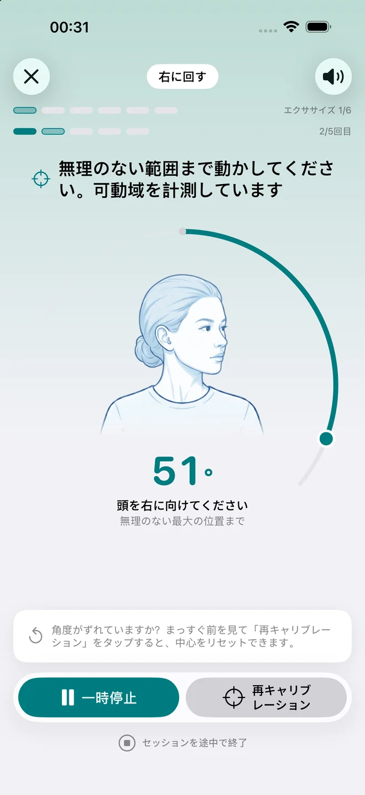
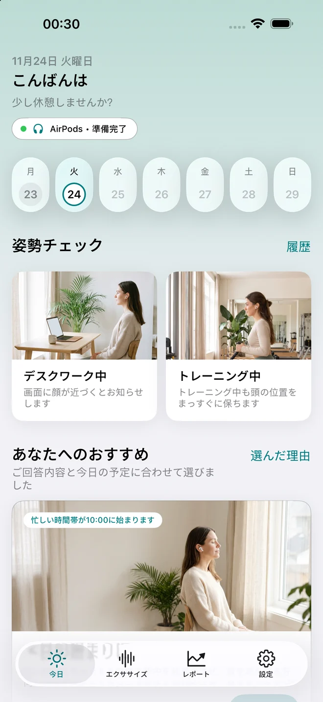
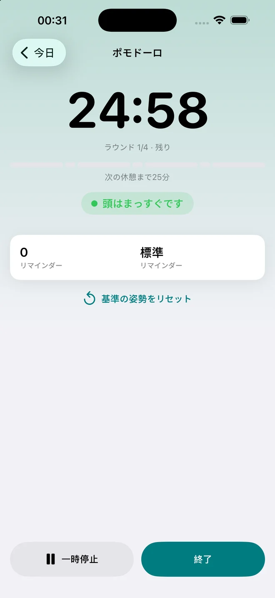

首
左右に回す、左右に傾ける、下を向く、上を向く、あご引き。AirPodsが角度を測って回数を数えます。AirPodsがなくても、時間に合わせてペースをガイドします。
首、呼吸、目、手、脚のための短いエクササイズと、デスクヨガ。NodlyはAirPodsで首の動きを測定し、姿勢を見守り、頭が下がったままになるとお知らせします。
App StoreからダウンロードiPhoneとiPadに対応 · 対応するAirPodsがあってもなくても

首だけではありません
左右に回す、左右に傾ける、下を向く、上を向く、あご引き。AirPodsが角度を測って回数を数えます。AirPodsがなくても、時間に合わせてペースをガイドします。

長く吐く呼吸、ボックス呼吸、均等な呼吸を1・2・3分で。イラストとやさしい振動がリズムを導きます。

画面から離れる2分間の休憩。遠くを見て、ゆっくりまばたきし、目を閉じて休みます。

手首のストレッチ、手首回し、グーパー。キーボードとマウスを使う毎日に。

かかと上げ、つま先上げ、ひざ伸ばし、座ったまま足踏み。椅子から立たずにできます。

座ったままキャット＆カウ、体側伸ばし、ツイスト。会議の合間に肩もほぐせます。
AirPodsを使うのは首の測定だけ。そのほかはすべてAirPodsなしで使えます。
AirPodsで測定
AirPodsのモーションセンサーが頭の角度を追います。目標の範囲に届くと、Nodlyが音と振動でお知らせし、回数を数えます。目標はあなた自身の可動域に合わせて調整されます。
NodlyはAirPodsのモーションセンサーを使います。カメラも追加のデバイスも不要です。
まっすぐ前を向いて、数秒間じっとしてください。Nodlyはこの姿勢を0°とします。
目標の範囲に届くと、Nodlyが音と振動でお知らせし、回数を数えます。
0°
右
緑の範囲まで右にドラッグし、中央に戻してください。
回数: 0


姿勢チェック
作業中の頭の位置を30分から2時間まで、または25分の作業と5分の休憩を繰り返すポモドーロで見守ります。
立って行うエクササイズでは、頭が下がると数秒でお知らせします。横になって行うエクササイズでは、一時停止してください。
iPhoneをロックしたまま作業を続けられます。残り時間はロック画面に表示され、そこから一時停止や終了もできます。
Siri、コントロールセンター、またはショートカットで設定した集中モードのオートメーションから。
「Nodlyで姿勢チェックを開始」
ルーティン
「一日の始まりに」や「画面からの休憩」など用意されたルーティンから始めるか、ライブラリから動きを選んで自分の順番に並べられます。「今日」画面の「あなたへのおすすめ」が、一日の流れや忙しい時間帯に合うルーティンを提案します。
レポート
連続日数、今週の記録、そして首・呼吸・目・手・脚に使った時間をひと目で。続けるほど、小さな3Dのデスクが片付いていきます。
そのほかの特長
履歴とルーティンは、ご自身のiCloudを通じてiPhoneとiPadの間で同期されます。
首のエクササイズは時間に合わせて行えます。そのほかのエクササイズにAirPodsは不要です。
毎日のリマインダー、忙しい時間帯のデスク休憩、週間サマリー。どれもお好みでオンにできます。
音声ガイド、サウンド、触覚フィードバックが導くので、画面から目を離していられます。
iPhoneとiPadで、大きな文字、VoiceOver、視差効果を減らすに対応。
日本語、英語、トルコ語、ドイツ語、スペイン語、フランス語、イタリア語、ポルトガル語、オランダ語、ロシア語、韓国語、中国語（簡体字・繁体字）。
プライバシーと信頼
モーションデータはiPhone上で処理され、生のデータは保存されません。アカウントも不要です。
動きはゆっくり、楽に感じる範囲で。違和感があればすぐにやめてください。Nodlyが無理を求めることはありません。
Nodlyはウェルネスアプリであり、いかなる疾患の診断や治療も行いません。首に不調がある場合は、始める前に医療専門家にご相談ください。